CC4: Procesos Adiabáticos
Derivación rigurosa de la relación $pV^\gamma = \text{cte}$ para procesos adiabáticos reversibles, con aplicaciones al sonido, la atmósfera y el ciclo de Carnot. Análisis del trabajo adiabático y el papel de $\gamma$.
Temas que cubre
- Derivación de $pV^\gamma = \text{cte}$ desde la primera ley con $Q = 0$
- Relaciones equivalentes: $TV^{\gamma-1} = \text{cte}$ y $T^\gamma p^{1-\gamma} = \text{cte}$
- Trabajo en proceso adiabático: $W = NC_V(T_f - T_i) = (p_fV_f - p_iV_i)/(1-\gamma)$
- La adiabática es siempre más empinada que la isotérmica en el diagrama $p$-$V$
- Aplicaciones: velocidad del sonido adiabática, gradiente adiabático en la atmósfera
- Relación entre $C_p$, $C_V$ y $\gamma$ para gases con distintos grados de libertad
Conceptos clave
Derivación de $pV^\gamma = \text{cte}$
De $dU = -p\,dV$ (adiabático cuasi-estático) y $dU = NC_V\,dT$: $NC_V\,dT = -p\,dV$. Con $p = Nk_BT/V$ se obtiene $NC_V\,dT/T = -Nk_B\,dV/V$. Integrando: $\ln T + (\gamma-1)\ln V = \text{cte}$, es decir $TV^{\gamma-1} = \text{cte}$.
$\gamma$ y los grados de libertad
Por equipartición, $C_V = (f/2)Nk_B$ donde $f$ es el número de grados de libertad. Entonces $\gamma = C_p/C_V = (f+2)/f$. Gas monoatómico: $f=3$, $\gamma=5/3$. Diatómico (T moderada): $f=5$, $\gamma=7/5$. Diatómico (T alta, vibración activa): $f=7$, $\gamma=9/7$.
Velocidad del sonido
El sonido se propaga adiabáticamente (oscilaciones rápidas sin tiempo para intercambio de calor). Newton calculó $v_s = \sqrt{p/\rho}$ (isotérmico, incorrecto). Laplace corrigió con la compresibilidad adiabática: $v_s = \sqrt{\gamma p/\rho} = \sqrt{\gamma k_BT/m}$, en acuerdo con el experimento.
Gradiente adiabático atmosférico
Una masa de aire que asciende se expande adiabáticamente y se enfría. El gradiente de temperatura adiabático seco es $dT/dz = -g/C_p \approx -9.8$ K/km. Si el gradiente real es mayor (atmósfera más inestable), hay convección; si es menor, la atmósfera es estable.
Fórmulas fundamentales



Qué hay que entender
- La derivación de $pV^\gamma = \text{cte}$ usa solo la primera ley con $Q=0$ y la definición de $C_V$ — no requiere ningún modelo microscópico. $\gamma$ es el único parámetro que depende del gas.
- Las tres formas ($pV^\gamma$, $TV^{\gamma-1}$, $T^\gamma p^{1-\gamma}$) son matemáticamente equivalentes; conviene usar la que involucra las variables conocidas del problema.
- La distinción entre compresibilidades adiabática e isotérmica fue histórica: Newton midió $v_s$ en el aire y obtuvo un valor 18% menor al experimental. Laplace identificó que las oscilaciones de presión en el sonido son adiabáticas, no isotérmicas.
- El gradiente adiabático en la atmósfera tiene consecuencias meteorológicas directas: la inestabilidad convectiva (tormentas) ocurre cuando el gradiente real supera el adiabático.